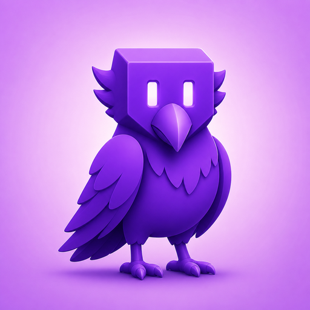

Safari'de Twitch ve Kick için BTTV, FrankerFaceZ ve 7TV emojileri, ayrıca 70'den fazla özellik: Otomatik talep, sohbet bölme, Ekran İçinde Ekran, anonim görüntüleme, sekme tamamlama tekerleği ve daha fazlası.
macOS 14.0 veya iOS 17.0 ve üzeri sürümleri gerektirir.Tam BetterTTV, FrankerFaceZ ve 7TV desteği ile anlık güncellemeler; sevdiğiniz yayıncıların kullandığı tüm emojileri görün.
11 renk temalı arka planlarla mesajları sırayla göstererek, hızlı sohbetlerde yerinizi kaybetmeden okuyun.
Kanal puanlarını, Düşüşleri, Anları ve izleme seri numaralarını otomatik olarak toplar; artık ödülü kaçırmayacaksınız.
Oynatıcıya doğrudan entegre tek tuşlu PiP düğümü; gezinirken, çalışırken veya başka bir iş yaparken izlemenize devam edin.
İzleyici listesine görünmeden yayınları izleyin; varlığınız tamamen gizli kalır.
Tamamen siyah OLED arka plan ve şeffaf sohbet katmanı ile otomatik sinema modu; sinematik bir izleme deneyimi.
Zaman damgaları, spoiler etiketleri, emojilerin tab tamamlanması, spam filtreleri, anahtar kelime vurguları ve aranabilir sohbet geçmişi.
160p'den Kaynağa kadar olan herhangi bir video kalitesini zorla; kanal gezinmesinde kalır, bir kez ayarlayın ve unutun.
Tüm özellikler İngilizce, İspanyolca, Fransızca, Almanca, Japonca, Korece, Portekizce, Çince ve 11 dilde tamamen yerelleştirilmiştir.
Bir emote adının bir kısmını yazın, Tab'a basın ve sonraki 6 ila 10 aday için önizlemalar arasında geçiş yapın. Seçtiğiniz şeyi onaylamadan önce görün.
İnsanlara isimlerini çağırırken dikkat çekici bir ton, başlık yanıp sönmesi ve renkli kodlanmış bahis satırları sağlar. Kanal başına özelleştirilebilir.
Yeni izleyicilere anında Spot ile renkli bir satır arka planı ekleyin. Canlı yayın yapan yayıncıların yeni gelenleri gerçek zamanında karşılaması için harika bir seçenektir.
Silinebilir mesajlar kaybolmak yerine çizgi ile görünür kalır ve sohbet bağlamı korunmaya devam eder.
PronounDB entegrasyonu, her konuşmacının tercih ettiği zamirlerini isminin yanına satır içi gösterir. Katılım isteğe bağlı ve gizliliğe saygılıdır.
Her kullanıcı için kanal başına özel görüntüleme isimleri ayarlayın. Orjinal kullanıcı adı, moderasyon için üzerine gelindiğinde (hover) görünmeye devam eder.
Herhangi bir kullanıcı adına tıklayarak, takip tarihini, son mesajları, kanal rozetlerini ve kanalına hızlı geçişi içeren daha zengin bir kart görüntüleyebilirsiniz.
Purple Crow'u Mac App Store'dan indirin; hafif bir Safari uzantısıdır.
Safari Ayarlarını açın, Uzantılar bölümüne gidin ve Mor Kartal'ı etkinleştirin; ardından twitch.tv için izin verin.
twitch.tv'yi ziyaret edin; her şey otomatik olarak çalışır, emojiler yüklenir, puanlar alınır ve sohbet iyileşir.
BTTV, FFZ ve 7TV topluluk emojileri Safari'de görünmez; sohbet spam yapınca sadece metin görürseniz, Purple Crow bu sorunu çözer.
Otomatik kanal puanı ödemesinden sohbet bölünmesi, resim içi resim, anonim izleme, ekran görüntüleri, klibin indirilmesi, tab tamamlama aracı ve spam filtresine kadar; Twitch ve Kick'i kullanmayı gerçekten daha iyi hale getiren özellikler.
Purple Crow, Chrome uzantısının Safari'ye taşınmış bir versiyonu değil; tam olarak Safari için geliştirilmiş, yerel performansa sahip, arka plan süreçleri içermeyen ve veri toplama yapmayan bir uygulamadır.
macOS 14.0 (Sonoma) veya sonrasını, Safari 17+ sürümünü gerektirir.
Privacy-first apps for macOS, iOS, and Safari.